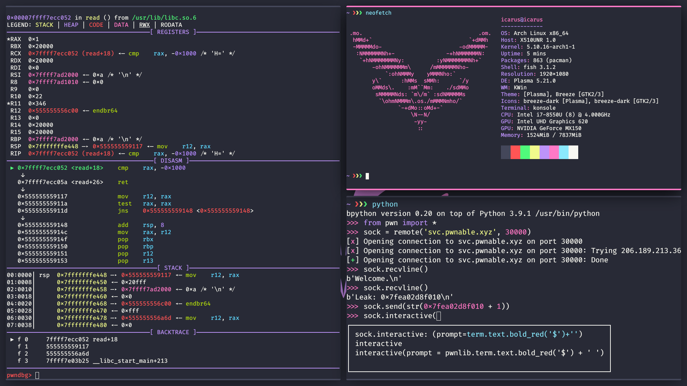

Features
Custom color themes
unified system-wide dark theme
Automatic widow tiling
with familiar keyboard shortcuts

Tools for any challenge
binary, steganography, forensics, network and more

Clean environment on every boot
icarus was designed to be used as a live system
Preconfigured environment
optimized for CTFs

Archstrike repository
large collection of high quality tools

Packages
binary, reversing and pwn
| pwndbg | gdb extension |
| cutter | gui for radare |
| checksec | check binaries for securtity features |
| ltrace | trace library calls |
| strace | trace system calls |
| ropgadget | search gadgets in binaries for reverse oriented programming exploits |
| pwntools | python library that facilitates exploit developement |
| heaptrack | heap memory analyzer |
| qemu | machine emulator and virtualizer |
steganography and forensics
| exiftool | extract meta information from files |
| binwalk | find embedded files in binaries |
| ciphey | automated decryption tool (which is not working atm) |
| testdisk | recover deleted files |
| volatility | memory forensics (currently broken) |
| filelight | disk usage information |
| hexedit | hex editor |
| okteta | gui hex editor |
| audacity | audio analysis |
network and pentest
| nmap | host discovery |
| netcat | read and write across network connections |
| wireshark | packet analyzer |
| tcpdump | packet analyzer |
| burpsuite | http/s request interceptor |
| gobuster | directory enumeration tool |
| john | password cracker |
| hydra | newtork login bruteforcer |
| metasploit | penetration testing platform |
| rockyou | list of commonly used passwords |
| dirbuster wordlists | list of directories |
command line utilities
| bat | cat alternative with syntax highlighting |
| exa | ls alternative with syntax highlighting |
| fd | find alternative with simpler parameters |
| dust | du alternative with more readable output |
| ripgrep | grep alternative |
| tokei | source code composition analyzer |
| hyperfine | benchmark tool |
| bottom | top alternative |
| tealdeer | man alternative |
| bandwhich | real time information about network utilization |
| rsync | remote and local file copying tool |
| zoxide | cd alternative |
| bpython | python repl with syntax highlighting and autocompletion |
| procs | ps alternative |
| sd | sed alternative |
| fzf | fuzzy finder |
| htop | process information |
| neofetch | system information |
desktop environment
| desktop environment | kde plasma |
| window manager | kwin with krohnkite tiling extension |
| terminal emulator | konsole |
| file explorer | dolphin |
| web browser | ungoogled chromium with adblock, darkreader and plasma integration |
| web browser | tor browser |
| document viewer | okular |
| image editor | krita |
| archive manager | ark |
| code editor / ide | onivim |
| lightweight code editor | kate |
| terminal code editor | neovim with plugins |
Shortcuts
window manager shortcuts [WIP]
| meta | open application dashboard |
| meta + space | open clipboard history |
| meta + return | open terminal |
| meta + E | open file explorer |
| meta + W | open web browser |
| meta + Q | close active window |
| meta + shift + Q | kill active window |
| meta + F11 | fullscreen active window |
| meta + + | zoom in |
| meta + - | zoom out |
| meta + D | show desktop |
| meta + shift + return | set current window as master |
| meta + tab | walk through windows |
| meta + shift + tab | present all windows |
| meta + 1 | switch to workspace 1 |
| meta + 2 | switch to workspace 2 |
| meta + 3 | switch to workspace 3 |
| meta + 4 | switch to workspace 4 |
| meta + ` | show all workspaces |
| meta + left | focus window to the left of the current active window |
| meta + right | focus window to the right of the current active window |
| meta + up | focus window above the current active window |
| meta + down | focus window below the current active window |
| meta + shift + 1 | move focused window to workspace 1 |
| meta + shift + 2 | move focused window to workspace 2 |
| meta + shift + 3 | move focused window to workspace 3 |
| meta + shift + 4 | move focused window to workspace 4 |
| meta + shift + ` | pin focused window to all workspaces |
| meta + shift + right | swap focused window with the one to its right |
| meta + shift + left | swap focused window with the one to its left |
| meta + shift + up | swap focused window with the one above it |
| meta + shift + down | swap focused window with the one below it |
| meta + ctrl + right | grow main stack horizontally |
| meta + ctrl + left | shrink main stack horizontally |
| meta + ctrl + up | grow active window verically |
| meta + ctrl + down | shrink active window verically |
| meta + ctrl + + | increase main stack size in tiling layout |
| meta + ctrl + - | decrease main stack size in tiling layout |
| meta + ctrl + \ | switch between floating and tiling layouts |
| meta + ctrl + F | toggle float on all visible windows |
| open screenshotting tool | |
| meta + print | capture active window |
| meta + shift + print | capture rectangular region |
| media keys | do what they are supposed to |
shell abbreviations and aliases [WIP]
| clip | xclip -selection clipboard |
| cat | bat --pager=never --theme="Dracula" --plain |
| catn | bat --pager=never --theme="Dracula" --number --decorations=always |
| ls | exa |
| lst | exa -T |
| la | exa -la |
| lat | exa -laT |
| find | fd |
| finda | fd -uu |
| du | dust |
| grep | rg |
| grepb | rg --binary |
| top | btm |
| python | bpython |
| ps | procs --pager=disable |
| pst | procs --pager=disable --tree |
| vim | nvim |
| ctrl + F | launch fzf recursively enumerating files and directories |
| ctrl + R | launch fzf with command history |
Downloads
v0.1-alpha
- list of features i can't be bothered to enumerate
sha256: e33d63de802eb7671d6d92182ba384bbcb794ebd198f7c2080e2e2d7b80bdafa
features planned for upcoming releases
- proxy setup for chromium, remove embedded browser from burpsuite
- android emulator
- java decompiler
- kde menu categories
- tor browser color scheme
- volatility with python 3
- make ciphey stop being broken
- audacity + color scheme
- torrent client
- irc client
- exa color scheme
- tlp and other battery optimizations
- natural scrolling an tap to click enabled by default
- keyboard shortcuts for multi monitor setup
- elf dissector
- more compilers and interpreters
- gnuplot + config / labplot
- more ctf tools
- better file associations